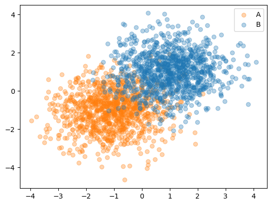
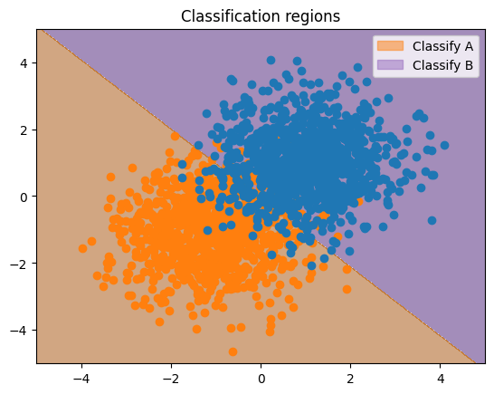
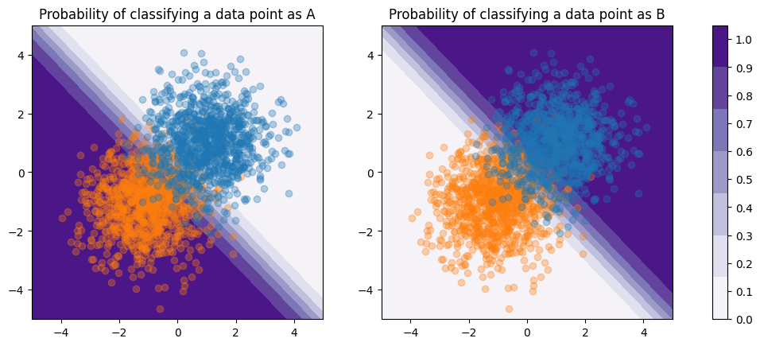

Classification#
We use classification to predict discrete labels on a set of data.
Binary Classification#
Binary classification is a supervised machine-learning task where we attempt to classify the data into two known categories. Classic examples of binary classification include E-mail spam filtering, disease classification, and image recognition.
Overview#
Some binary classification models include:
Naive Bayes
Logistic Regression
K-Nearest Neighbors
Support Vector Machine
Decision Trees
We will look at logistic regression in this tutorial.
Logistic Regression#
First we will generate some toy sample data. We have two classes ‘A’ and ‘B’:
Show code cell source
import numpy as np
import matplotlib.pyplot as plt
rng = np.random.default_rng(42)
cluster1 = rng.multivariate_normal([-1,-1], [[1,0], [0,1]], size=1000)
cluster2 = rng.multivariate_normal([1,1], [[1,0], [0,1]], size=1000)
data = np.concatenate((cluster1, cluster2))
labels = np.zeros(2000, dtype="str")
labels[:1001] = "A"
labels[1001:] = "B"
Show code cell source
fig, ax = plt.subplots()
ax.scatter(*data[labels == "A"].T, alpha=0.33, color="tab:orange", label="A")
ax.scatter(*data[labels == "B"].T, alpha=0.33, color="tab:blue", label="B")
ax.legend();

Now we’ll split that data into training data and test data.
from sklearn.model_selection import train_test_split
train_x, test_x, train_y, test_y = train_test_split(data, labels, test_size=0.1, random_state=42)
Ordinarily, at this point, we would carry out model selection by trying different values of the hyperparameters (what features to use, regularization strength, etc.) to determine which ones worked best using either a validation dataset or cross-validation such as K-folds. A hyperparameter is a value we can tweak to affect how the model behaves during learning. However, since this is a very simple example we are going to skip that for now since it is covered in other tutorials.
The LogisticRegression model takes one hyperparameter \(C\) which is the inverse of the regularization strength; a smaller value makes regularization stronger. Regularization is used to prevent overfitting due to high magnitude weights. For more on the logistic regression model and its implementation, please see the scikit-learn documentation.
We fit the data as usual for sklearn using the fit(features, classes) function, which takes two parameters: features, an array of input features in the data; and classes, an array of the classes assigned to each data point.
from sklearn.linear_model import LogisticRegression
model = LogisticRegression(C=1)
model.fit(train_x, train_y)
LogisticRegression(C=1)In a Jupyter environment, please rerun this cell to show the HTML representation or trust the notebook.
On GitHub, the HTML representation is unable to render, please try loading this page with nbviewer.org.
LogisticRegression(C=1)
Once we have trained our model, we can predict the class of a new data point using the predict(X) function. Predict takes an array of data points and returns an array of the predicted labels, making predicting multiple new data points easy.
model.predict([(2,-1), (-1,-2), (0,0)])
array(['B', 'A', 'B'], dtype='<U1')
For demonstration purposes, we will predict the label for an entire region to understand what the model is doing.
x = np.linspace(-5, 5, 1000)
y = np.linspace(-5, 5, 1000)
x_mesh, y_mesh = np.meshgrid(x, y)
grid = np.stack((x_mesh, y_mesh)).reshape(2,-1).T
predictions = model.predict(grid)
from matplotlib import colormaps, patches
plt.contourf(x_mesh, y_mesh, np.array([1 if x == 'A' else 0 for x in predictions]).reshape((1000,1000)), cmap=colormaps["PuOr_r"], alpha=0.5)
plt.scatter(*data[labels == "A"].T, color="tab:orange")
plt.scatter(*data[labels == "B"].T, color="tab:blue")
orange_patch = patches.Patch(color="tab:orange", alpha=0.5, label="Classify A")
blue_patch = patches.Patch(color="tab:purple", alpha=0.5, label="Classify B")
plt.legend(handles=[orange_patch, blue_patch])
plt.title("Classification regions")
plt.show()

We see that there is a discrete line, called the decision boundary that marks the boundary between where a point is classified into different categories. Had we used more features, especially higher-order polynomials, the decision boundary might be nonlinear, and could more closely fit the data.
The model also assigns a probability for how likely a given point is to belong in each category. We can examine this using the predict_proba function; its parameters are the same as predict:
model.predict_proba([(2,-1), (-1,-2), (0,0)])
array([[0.0997115 , 0.9002885 ],
[0.99719713, 0.00280287],
[0.47300634, 0.52699366]])
Here, the first column gives the probability of being classified as “A”, and the second as “B”.
We will plot the probabilities of the entire region:
predicted_probabilities = model.predict_proba(grid).reshape(1000,1000,-1)
fig, (ax1, ax2) = plt.subplots(ncols=2, figsize=(13, 4.8))
CS = ax1.contourf(x_mesh, y_mesh, predicted_probabilities[:,:,0], cmap=colormaps["Purples"])
ax1.scatter(*data[labels == "A"].T, alpha=0.33, color="tab:orange", label="A")
ax1.scatter(*data[labels == "B"].T, alpha=0.33, color="tab:blue", label="B")
ax1.set_title("Probability of classifying a data point as A")
ax2.contourf(x_mesh, y_mesh, predicted_probabilities[:,:,1], cmap=colormaps["Purples"])
ax2.scatter(*data[labels == "A"].T, alpha=0.33, color="tab:orange")
ax2.scatter(*data[labels == "B"].T, alpha=0.33, color="tab:blue")
ax2.set_title("Probability of classifying a data point as B")
fig.colorbar(CS, ticks=[0.1*i for i in range(0,11)], ax=(ax1, ax2))
# fig.legend()
plt.show()

Note
Observe that there is a gradient of reducing probabilities around the decision boundary, which lies at a probability of exactly 0.5, and that when combined, these probabilities sum to 1.
Let’s examine the probability of a point close to the decision boundary.
model.predict_proba([(0,0)])
array([[0.47300634, 0.52699366]])
The assigned probability at each point can be thought of as a measure of how confident the model is that the point belongs to a given class. In general, a higher probability means a higher confidence, and a lower probability, a lower confidence. The probability of the point \((0,0)\) belonging to each class is approximately 0.5, which indicates that the model is not very confident about which model it belongs to. Each class is just as likely. In this case, since “B” is slightly higher, that is the chosen class.
Note
In the rare instance that the probability of each class is exactly 0.5 (each class just as likely), the first class is returned arbitrarily.